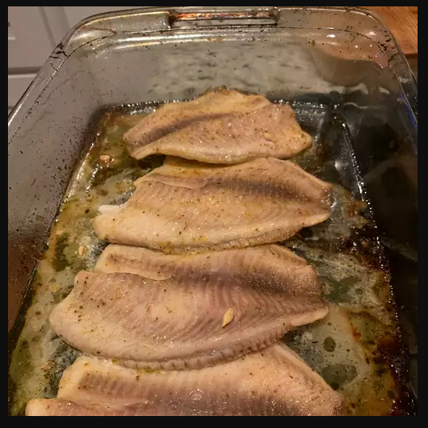

Baked Tilapia

Description
The recipe below describes the method taken in preparing a Baked Tilapia.
According to reviews on the recipe, it was reported that the recipe was easy to follow and the outcome was amazing
Therefore, I will recommend anyone to try out this recipe, as it is bound to give the same test
Ingredients
- 4 (4 ounce) fillets tilapia
- 2 teaspoons butter
- ½ teaspoon garlic salt, or to taste
- ¼ teaspoon seafood seasoning (such as Old Bay®), or to taste
- 1 lemon, sliced
- 1 (16 ounce) package frozen cauliflower with broccoli and red pepper
- salt and ground black pepper to taste
Steps
- Preheat the oven to 375 degrees F (190 degrees F). Grease a 9x13-inch baking dish.
- Place tilapia fillets in the bottom of the baking dish, then dot with butter and season with garlic salt and seafood seasoning. Top each fillet with a slice or two of lemon. Arrange frozen mixed vegetables around fillets and season lightly with salt and pepper. Cover the dish with aluminum foil.
- Bake in the preheated oven until vegetables are tender and fish flakes easily with a fork, 25 to 30 minutes.